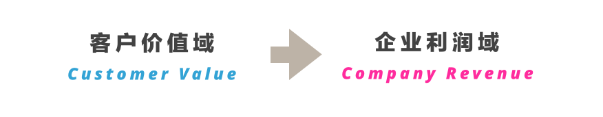
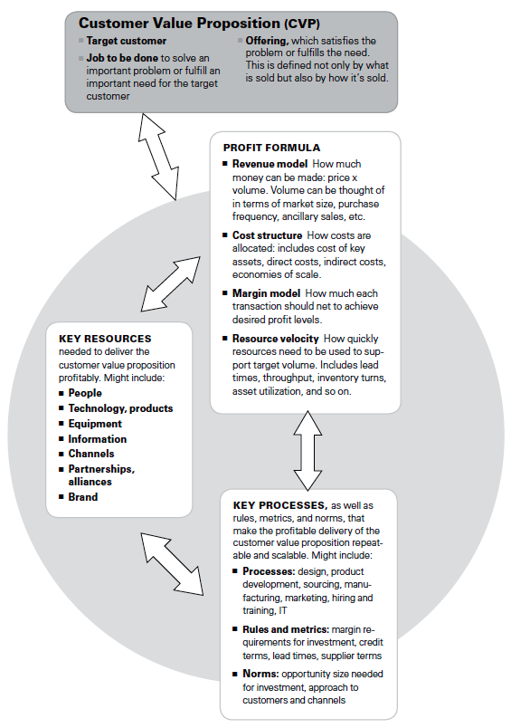
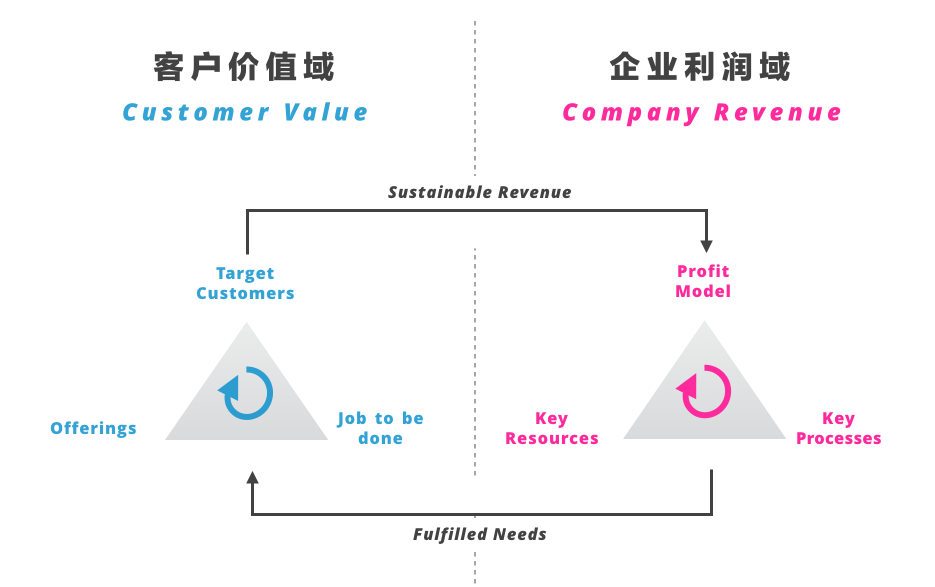
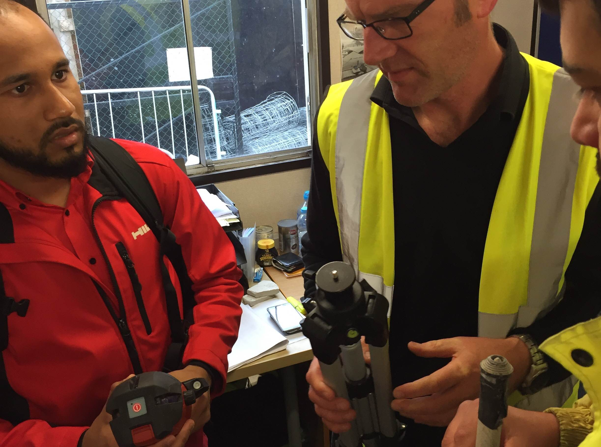

本文是《战略十篇》的第四篇书稿，来自于Mark W.Johnson、Clayton M.Christensen、以及Henning Kagermann，原文刊于《哈佛商业评论》2008年12期（链接）。
商业模式的定义
关于商业模式讨论有很多，Paul Timmers在1998年一篇经典论文《Business Models for Electronic Markets》中最早讨论了电商的商业模式，这让人有理由相信，正是因为外部环境的巨大变化（互联网的兴起），使得人们需要理解、分析、和重新思考目前的商业模式，他对商业模式有着以下定义：
一个产品、服务、信息流的架构，包括对其中不同角色的描述；一份对这些不同角色所带来价值的描述；一份对盈利来源的描述。
Timmers的定义中着重强调了「为什么」，而2000年Gary Hamel在《Leading the Revolution》一书中将商业模式创新带入了更细节的讨论：

他把商业模式的成功分拆成四个主要元素：客户（Customer Interface）、策略（Core Strategy）、资源（Strategic Resources）、和价值网（Value Network）。
此外四个主要元素之间分别由客户价值（Customer Benefits）、内部架构（Configuration）、企业边界（Company Boundaries）进行关联。
而在本文中，核心模型简化成「客户价值域」和「企业利润域」两大问题，商业模型究其本质是客户价值到企业利润的持续转化。

在这个模型当中，Hamel模型中头两个元素被整合成了「客户价值定位Customer Value Proposition」，在其中包括了三大要素：
- 目标客户（Target customer）；
- 核心客户目的（Job to be done）；
- 交付物（Offerings）。

在「客户价值域」中需要讨论的三大主题变为：谁是目标客户？客户要干什么？我们卖什么以及怎么卖。
而在「企业利润域」中，三个重要元素变成了相互依存和推进的关心，这种表述要比Hamel模型中的线性模式要更加符合真实情况，这三大要素是：
- 利润模型；
- 核心资源；
- 核心过程。
在真实企业运营中三种都是动态且相互作用的，共同通过产出客户价值进行企业利润的生产。如果我们尝试对其进行简化，便可产出以下模型：

这就是本文对于商业模式最简化的定义。
Job to be done
在这里最值得一提的是「Job to be done」，这是本文作者之一Clayton M.Christensen三大核心理论之一，在其著名的一个视频讲演中提到了一个有趣的例子：
研究人员发现高速公路入口处的快餐店最畅销的商品是「奶昔」，而这个品牌的「奶昔」在其他地方却没有那么受欢迎，为什么只在高速公路入口处最受欢迎呢？最后研究人员发现，消费者喜欢奶昔的原因不是因为口味，而是「奶昔」正好满足了那个「Job to be done」：
- Target Customer：进入高速公路的开车人；
- Job to be done：在进入收费站前的长龙前干点什么，又不能太狼狈；
- Offering：一瓶单手就能喝、还不会洒、一会儿就能喝完的奶昔。
因此，客户购买服务的本质在于服务背后那个「Job to be done」，而不在于服务本身是什么。
文章又提到了另一个有趣的案例Hilti（正好是我今年的客户）。Hilti是一家总部位于列支敦士登的建筑工具制造商，Hilti意识到，它面对的客户，是全世界建筑工地上的包工头、建筑公司、建筑工人，这些客户的「Job to be done」不是拥有建筑工具，而是「完成建筑任务」。
在意识到这一点之后，Hilti改变了其商业模式，将纯粹的产品销售变成「帮助客户完成建筑任务」，其推出的Fleet Management服务，将客户从琐碎的工具购买、管理、维修、培训、升级等行为中解脱出来，提供最专业的贴身工具管家服务。

不光光是工具贴身服务，Hilti甚至制作了很多电子化的工具，为客户在工具采购过程中与其后台系统的集成提供便利，减少工具的等待时间，这背后，是整个业务模型的彻底改变。在伦敦，我跟随许多Hilti一线的客户经理深入各大建筑工地，深感Hilti人对于施工、建筑管理、产品规格和使用知识之丰富。
我曾经问一位客户会否除打电话给Hilti客户经理之外的方式与Hilti联系，他说不会，我说如果电话没有接到呢？他说：「这事在过去十年里从来没有发生，这也是我选择Hilti的原因」。
而这背后，一整套运营系统的改变，才可以支持如此独特的客户价值定位。
 Hilti的客户经理在和客户展示最新的产品。
新商业模式的触发
在理解商业模式的定义之后，那么是什么触发了新商业模式的产生？
正如前文所述，正是看到了互联网对于整个商业的影响，才产生了最早一批对于商业模式的讨论（如1998年Paul Timmers），这里不得不提到Hugh Courtney、Jane Kirkland、以及Patrick Viguerie在2000年《Strategy under uncertainty》一文对于不确定性的描述：

世界早已告别一个线性发展的世界，2000年，Gary Hamel的《Leading the Revolution》振聋发聩地指出：
The age of progress is over.
更不要说到16年后的今天，绝大多数的企业已经走入「True uncertainty」的阶段，具体来说，新商业模式出现的触发体现在以下五个场景：
- 新出现的、未被满足的潜在客户群；
- 新技术的突然市场化；
- 新出现的Job to be done；
- 正在崛起的底端颠覆者；
- 现有竞争环境的变化。
而之所以多数企业的未来开始进入「True uncertainty」阶段的本质在于：以上五个场景正在同时发生。
写在最后
作为一个致力于企业进行创新的战略设计者，你需要理解以下逻辑：
- 未来正在倾向于「模糊化（Ambiguity）」，商业模式创新的间歇期可能变得更短，意味着任何一个有效的商业模式可能在短时间内失效；
- 商业模式的本质是客户价值定位到企业利润的持续转化，企业战略制定者左手抓客户价值中的Job to be done（其次才是目标客户），右手抓利润模型；
- 真正的创新来自于在现有商业模式中盘活资源、打通桎梏、优化流程、提高效率、促成规模，并在此之上建立新的商业模式，而不在于「技术」、更不在于「设计」。